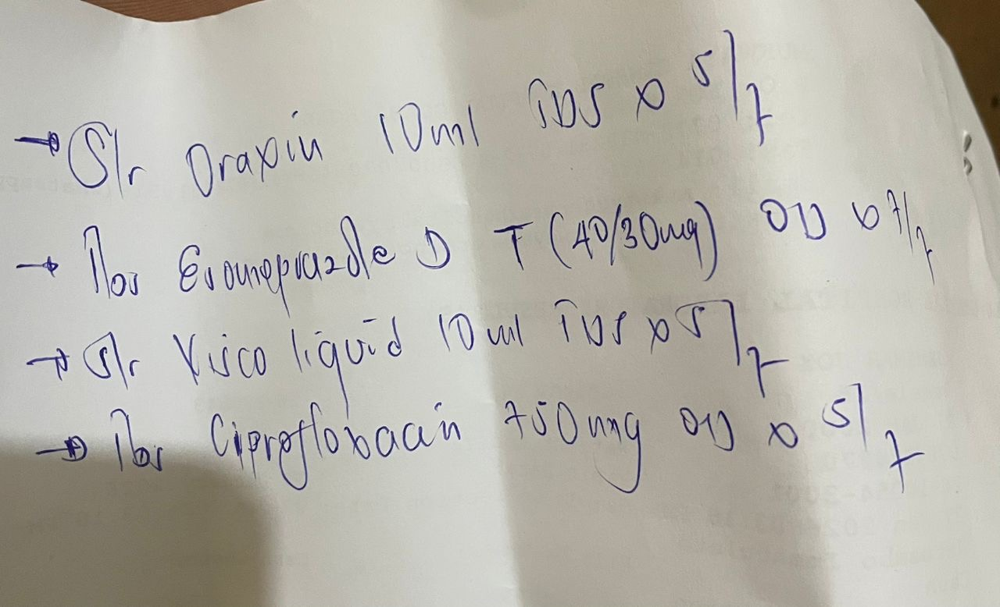

2 Yohana 1:3
Data → Signal → Meaning
Altitude · Gradient · Basin

DDx as SGD
Exploring the mechanics of a clinical process vs. machine learning algorithm.
Card 1: Mapping DDx to SGD — The Core Insight
A fascinating crossover: View the doctor as a neural network optimizing a loss function via Stochastic Gradient Descent (SGD). The patient's true disease is the global minimum; the current hypothesis is the position in parameter space.
Conceptual Mapping Table:
- Goal: Minimize Loss (SGD) ⇔ Minimize diagnostic uncertainty (DDx mismatch symptoms → diagnosis).
- Initialization: Random/pre-trained weights ⇔ Chief complaint (broad start: "epigastric pain").
- Data Batch: Small training sample ⇔ Vital signs, history snippet, or single lab/test result.
- Gradient: Steepest descent direction ⇔ Symptom mismatch insight ("This doesn't fit X, leans toward Y").
- Step / Update: Weight adjustment ⇔ Ordering targeted test or ruling out disease.
- Learning Rate: Step size ⇔ Aggressiveness (wait-and-see low vs. urgent CT high).
MathJax enabled for inline rendering: e.g., gradient as $\nabla L$, update as $\theta_{t+1} = \theta_t - \eta \nabla L$.
Card 2: The "Stochastic" Essence — Noisy, Iterative Reality
Standard Gradient Descent uses full dataset → impractical in medicine (rarely have genetics + MRI + biopsy at t=0).
Stochastic updates shine here: Process one (or small batch) data point at a time, with noise.
- Patient: "Hurts when I breathe" → immediate probability shift (weights update).
- Step toward new hypothesis (e.g., Pneumonia vs. MI).
- Next: Fever 39°C → another noisy update.
- Iterate: Noisy path (weird symptom misleads temporarily), but converges over time to lowest-error diagnosis.
Real-world DDx is noisy SGD: partial info → hypothesis refinement → more data → repeat. Mirrors clinical uncertainty and Bayesian-like priors in noisy gradients.
Card 3: Where Metaphor Meets AI Reality + Summary
Not just analogy — modern CAD systems (e.g., VisualDx, AI symptom checkers) literally train via SGD:
- Input: Massive EHR datasets.
- Algorithm: Neural net optimized by SGD/backprop.
- Output: Probability-ranked DDx list.
Summary: Differential Diagnosis = optimization landscape descent. Doctor iteratively steps through symptom space, stochastic updates from each new clue, converging on minimal-error point (correct diagnosis). Noisy, efficient, real-time — just like SGD in training.
Question for reflection: Building a diagnostic model? Or seeking a mental framework to grasp DDx / SGD? (Pentadic lens welcome: Language labels symptoms, Science measures error ε, Art tracks dE/dt trajectory, Life adds ecological volatility, Meaning integrates lifetime priors.)
Card 4: Presentation & Initial Interpretation
23yo female, Kampala, epigastric point tenderness (below xiphisternum), associated diarrhea, partial relief from antibiotics (esp. amoxicillin), recurrent after incomplete "triple therapy" (~1 week multiple times). Looks well/lean/healthy, blames "poor eating". Self-provided med list: Ciprofloxacin 500mg (repeated/short courses), Esomeprazole (40/30mg combos), Oraxin/Draxin syrup, Vusco liquid (likely mucosal protectant), etc. Advice given: milk/cheese for acid buffering, complete full course (3 weeks commitment), strong PPI continuation.
- Key complaint now: upsetting diarrhea
- Strong suspicion: Persistent H. pylori gastritis/ulcer (East Africa high prevalence, incomplete eradication → resistance/recurrence)
- DDx differentials: Functional dyspepsia, antibiotic-associated diarrhea, possible parasites (Giardia common locally), less likely biliary/GERD
Pentadic schemes (from site rabbit holes → fibromyalgia/DDx=SGD page): Custom 5-lens (Language/Science/Art/Life/Meaning) applied → reinforces bacterial persistence + iatrogenic diarrhea as core equation.
Card 5: Pentadic Calculus Application & Refinements
Using site's pentadic framework (Language → Science → Art → Life → Meaning) on case:
- Language (00): Epigastric spot pain + diarrhea → classic H. pylori localization + dysbiosis signal
- Science (01): No alarms, partial abx/PPI response, recurrence post-incomplete → high H. pylori probability
- Art (02): Relapsing-remitting trajectory, diarrhea escalation from repeated short courses
- Life (03): Self-medication pattern, regional resistance (cipro poor choice), young resilience but accumulating gut toll
- Meaning (04): Early H. pylori + failed erads → resistance buildup; diarrhea breach in QOL → need full reset
Recommendations: Avoid repeated cipro (high resistance). Prefer bismuth quadruple (PPI bid + bismuth + metro + tetra, 14 days) per current guidelines. Probiotics for diarrhea. Retest eradication post-Rx. If bismuth unavailable → concomitant quadruple or optimized triple (full duration).
Card 6: Bismuth Clarification & Giardia Coverage
Bismuth = safe compound (e.g., bismuth subcitrate in De-Nol® or subsalicylate in Pepto-style), coats stomach, kills H. pylori directly, boosts antibiotic efficacy. Key in preferred quadruple therapy (Maastricht VI/ACG 2024+), especially Africa high clarith resistance. Available Kampala (pharmacies like First Pharmacy, Mulago area; generics/compounded; ask for De-Nol or bismuth subcitrate).
Metronidazole & Giardia: Yes — standard first-line for giardiasis (common cause diarrhea + epigastric pain in Uganda). Adult dose: 250–500 mg TID × 5–7 days (or tinidazole single 2g). In quadruple regimen (metro 400–500 mg TID–QID × 14 days) → covers Giardia as bonus if present. No need separate Rx unless confirmed persistent.
- Next: Source bismuth if possible → start optimized 14-day course
- Support: Probiotic (S. boulardii ideal), hydration, bland diet
- Follow-up: Symptom check + H. pylori retest (stool antigen) 4+ weeks post
Young patient → excellent prognosis with committed full eradication. Danke for the session!
DDx as SGD — What Happens After a Big Learning Rate Step
In the DDx as SGD analogy (building on the card you shared), a big learning rate (η) in one iteration corresponds to a doctor making a very aggressive diagnostic move — like immediately ordering invasive tests, starting broad-spectrum treatment, or jumping to a rare/high-stakes diagnosis based on limited initial clues.
Here's what the algorithm (SGD) typically does next after such a large step:
Immediate Consequences of One Large Step
- Overshooting the minimum — The update θ_{t+1} = θ_t - η ∇L(θ_t) becomes very large because η is big. Instead of gently approaching the true disease (global/local minimum of the loss), the hypothesis jumps past it to the opposite side of the loss landscape.
- In DDx terms: The doctor rules in/out something too hastily → symptoms now "don't fit" the new hypothesis even worse than before.
- Oscillation — The next gradient (from the new, overshot position) often points back toward the previous area (or even stronger in the opposite direction). So the following update swings back — potentially overshooting again in the reverse direction.
- Result: The loss (diagnostic uncertainty) starts bouncing up and down wildly instead of steadily decreasing.
- In medicine: Hypothesis flips rapidly (e.g., "it's cardiac → no, definitely pulmonary → wait, maybe GI?"), tests contradict each other, patient confusion rises, and uncertainty increases rather than resolves.
- Divergence (worst case) — If η is extremely large (or the landscape is steep/unstable), the steps grow larger and larger → parameters explode → loss goes to infinity.
- In DDx: The doctor chases increasingly unlikely diagnoses → orders more and more tests/treatments → misses the real issue entirely, risks harm (over-testing, wrong therapy), or abandons coherent reasoning.
Visual/Conceptual Behavior After One Big Step
- Next iteration(s): The algorithm computes a new noisy gradient from the overshot position → likely large in the opposite direction → takes another big step back (or sideways if stochastic noise kicks in).
- Short-term path: Zigzag / oscillation around the minimum (noisy bouncing) rather than smooth descent.
- Long-term outcome (without adjustment):
- May eventually settle into a noisy orbit around a suboptimal point (high variance, poor final accuracy).
- Or diverge completely (training "blows up" — loss NaN/exploding gradients).
- Stochastic noise can sometimes help escape bad overshoots, but with very large η it's usually destructive.
DDx Analogy Mapping
- Big η step = Ordering a high-risk/expensive test cascade or jumping to treatment based on one strong symptom ("chest pain → stat cath lab!").
- Next step (algorithm's response) = New data contradicts the jump → doctor backtracks aggressively ("actually normal EKG → rule out cardiac, chase PE instead").
- Result = Oscillating differential (flip-flopping diagnoses), wasted resources, delayed correct diagnosis, or spiraling uncertainty.
Practical Takeaway (Both ML & Medicine)
Large learning rates speed things up initially but risk instability. In practice:
- Start with moderate η and decay/schedule it down.
- Use momentum/Adam-style adaptive rates to dampen wild swings.
- In clinic: Start broad but measured (history + basics), escalate aggressiveness only as data demands — avoid "one big leap" unless truly emergent.
This noisy, overshooting behavior is exactly why tuning the learning rate (diagnostic aggressiveness) is so critical — too big, and you diverge from truth rather than converge.
If you'd like a fourth card expanding this "large η" scenario (with math visuals or pentadic overlay), just say!